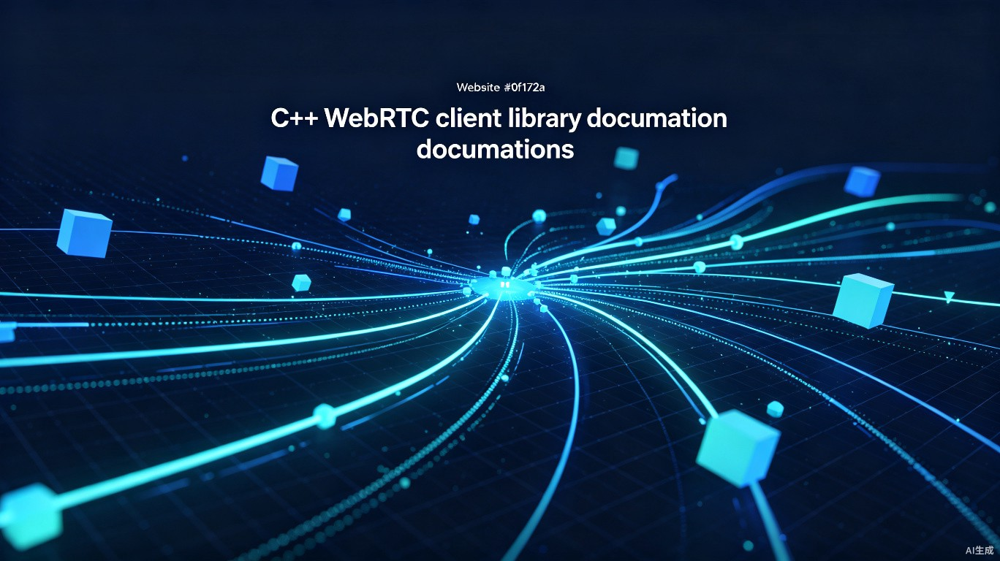

FlashRTC采用模块化分层设计，从底层协议到上层应用封装完整覆盖，让开发者无需理解复杂的WebRTC内部机制即可快速集成实时音视频功能。
flowchart TB
subgraph APP["上层应用"]
WC["WhipClient
推流客户端"]
WHC["WhepClient
拉流客户端"]
end
subgraph CORE["核心模块"]
WHIP["whip
WHIP推流"]
WHEP["whep
WHEP拉流"]
end
subgraph PROTO["底层协议栈"]
SDP["sdp
SDP协议"]
ICE["ice
ICE连通性"]
DTLS["dtls
DTLS握手"]
RTP["rtp
RTP/RTCP"]
SRTP["srtp
SRTP加密"]
UDP["udpskt
UDP套接字"]
HTTP["httpclt
HTTP信令"]
UTILS["utils
工具函数"]
end
WC --> WHIP
WHC --> WHEP
WHIP --> SDP & ICE & DTLS & SRTP & HTTP
WHEP --> SDP & ICE & DTLS & SRTP & HTTP
DTLS --> SRTP
SRTP --> RTP
RTP --> UDP
ICE --> UDP
HTTP --> UDP
FlashRTC的设计目标是提供一个自包含、零依赖外部WebRTC库的C++实现。从ICE连通性检查到SRTP加密，所有关键协议均在库内部实现，仅依赖OpenSSL、libsrtp2等成熟基础库，确保协议行为的可控性与可移植性。
FlashRTC提供WHIP推流与WHEP拉流两大核心能力，分别对应实时音视频的上行与下行场景。
基于WebRTC-HTTP Ingestion Protocol标准，向SRS等服务器推送音视频流。支持H264视频编码与Opus音频编码的RTP封装，自动完成ICE候选、DTLS握手及SRTP密钥协商。
基于WebRTC-HTTP Egress Protocol标准，从SRS服务器接收音视频流。支持通过回调函数接收解码后的H264视频帧与Opus音频数据，内置JitterBuffer与音视频同步。
FlashRTC自包含完整的WebRTC协议栈实现，各层模块职责清晰，可独立使用。
SDP报文的解析与生成，支持ICE候选、DTLS指纹、SSRC、编解码器参数等WebRTC扩展属性的读写。
ICE（Interactive Connectivity Establishment）协议实现，包括STUN消息构造与解析、候选收集、连通性检查、提名机制，支持UDP直连与中继场景。
基于OpenSSL的DTLS（Datagram TLS）客户端实现，完成SRTP密钥材料的协商与导出，确保媒体通道的端到端加密。
RTP报头封装与解析、RTCP发送者/接收者报告、H264 NALU分片与重组、Opus帧封装、序列号管理与丢包检测。
基于libsrtp2的SRTP/SRTCP加解密实现，支持AES-CM/GMAC模式，自动进行密钥派生与ROC（Roll-Over Counter）管理。
跨平台UDP Socket封装，支持绑定、发送、接收、异步事件通知，Windows原生实现兼容VS2013。
轻量级HTTP客户端，用于WHIP/WHEP信令交互（POST/GET/PATCH），支持自定义Header与异步响应处理。
随机数生成、Base64编解码、Hex转换、时间戳处理、字节序转换、字符串工具等常用辅助函数。
面向应用开发者的完整客户端封装，集成采集、编码、推流/拉流、播放等端到端能力，真正做到开箱即用。
完整的推流客户端封装，内部集成音视频采集、编码、推流线程管理。开发者只需传入URL即可开始推流。
完整的拉流客户端封装，内部集成接收线程、解码器、音频播放。通过回调函数将解码后的数据交给应用层。
极简的API设计，只需数行代码即可完成推流或拉流功能的集成。
以下示例展示如何使用底层 whip 类向SRS服务器推送音视频流：
#include "flashrtc/whip.h"
int main()
{
whip pusher;
// 连接WHIP服务器并交换SDP
if (pusher.Connect(
"http://localhost:1985/rtc/v1/whip/?app=live&stream=test"))
{
// 发送Opus音频帧（20ms/帧，时间戳增量960）
pusher.SendAudio(opus_data, opus_len, 960);
// 发送H264视频帧（时间戳增量3000，约33fps）
pusher.SendVideo(h264_data, h264_len, 3000);
// 关闭连接并释放资源
pusher.Close();
}
return 0;
}以下示例展示如何使用底层 whep 类从SRS服务器接收音视频流：
#include "flashrtc/whep.h"
int main()
{
whep puller;
// 设置视频帧回调（H264 NALU数据）
puller.SetVideoCallback(
[](uint8_t* data, int len, uint32_t timestamp, uint16_t seq)
{
// 将H264数据送入解码器或渲染器
decoder.Decode(data, len, timestamp);
});
// 设置音频帧回调（Opus数据）
puller.SetAudioCallback(
[](uint8_t* data, int len, uint32_t timestamp)
{
// 将Opus数据送入解码器或播放器
audioPlayer.Play(data, len, timestamp);
});
// 连接WHEP服务器
if (puller.Connect(
"http://localhost:1985/rtc/v1/whep/?app=live&stream=test"))
{
// 阻塞接收循环，直到连接断开
puller.Run();
// 关闭连接
puller.Close();
}
return 0;
}对于更简单的集成方式，可直接使用 WhipClient 或 WhepClient 高层封装，无需手动处理采集、编码和线程管理。
FlashRTC在架构设计、协议兼容性和易用性方面具备显著优势。
完全基于C++开发，不依赖任何浏览器内核或JavaScript引擎，可直接嵌入桌面应用程序、工控系统或游戏客户端中。
内置ICE、DTLS、SRTP、RTP/RTCP完整实现，无需链接Google libwebrtc等重量级外部库，编译产物体积更小，行为更可控。
遵循IETF WHIP/WHEP标准草案，与SRS、OBS-WebRTC等主流流媒体基础设施无缝兼容，降低服务端适配成本。
原生Windows实现，兼容Visual Studio 2013及更高版本，支持Win7/Win10/Win11，便于集成到现有C++桌面项目中。
各层协议模块职责单一、接口清晰，既可组合为完整客户端，也可独立使用（如仅使用sdp/rtp模块进行协议分析）。
WhipClient与WhepClient封装了采集、编码、线程管理、网络重连等复杂逻辑，开发者仅需关注业务层数据处理。
FlashRTC仅依赖以下四个成熟的基础库，安装配置简单。
| 依赖库 | 用途 | 版本要求 | 许可 |
|---|---|---|---|
| OpenSSL | DTLS握手（X.509证书验证、密钥导出） | 1.1.1+ | Apache-2.0 |
| libsrtp2 | SRTP/SRTCP媒体加解密 | 2.4+ | BSD-3 |
| FFmpeg | 音视频编解码（上层封装使用） | 4.4+ | LGPL/GPL |
| OpenCV | 视频采集与图像处理（上层封装使用） | 4.x | Apache-2.0 |
FFmpeg与OpenCV仅在 WhipClient / WhepClient 上层封装中使用。如果仅使用底层 whip / whep 类（应用自行处理编解码），则无需依赖FFmpeg和OpenCV。